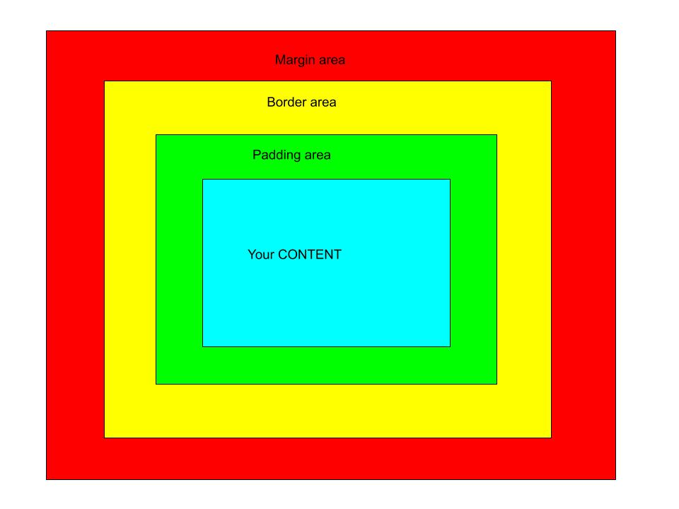

- Box model:
-
Every html element has a box model which is a rectangular box that contains content such as an image or text and many other things that you put in your html document. A box model is normally the combination of margins, borders, padding and inside those we have the content. Every content is possessed in a box model. The content is placed in the most middle then followed by the padding, then the border and the last is the margin. Every one of those are measured by it’s width and height.
- Content-box:
-
The content box is the part in the center within a box model. It contains the main content of our document for example image or text.
- Padding-box:
-
Padding-box is a part of a model box which contains the size property including padding and content.
- Border-box:
-
Border-box is a part of a model box that holds the padding box.
- Border longhand is used to set different values for these properties. Border-width, border-color, and border-style.
- Margin is the cover part of a model box. In other word, it is the one which is packs every box in a model box.
- padding is the box that wraps the content-box in a model box.
- Display-box has these values: none and content.
- box-sizing takes care of the calculation of the total width and height of an element.
What happens when two differently sized margins of two different boxes collide?
What is the difference between display values inline, inline-block, and block?
This diagram below shows you how does a box model work:

As we see, that diagram above helps us to understand how does a box model work and how can you control it. We see that the one in the middle is the content followed by the Padding-box, border and the margin.